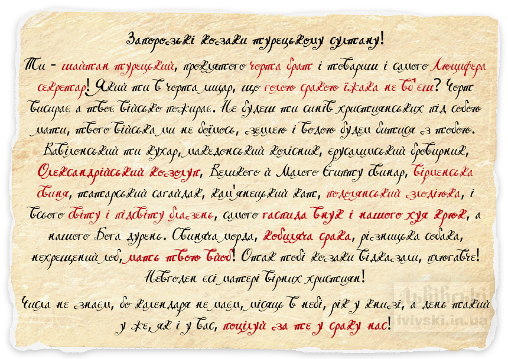
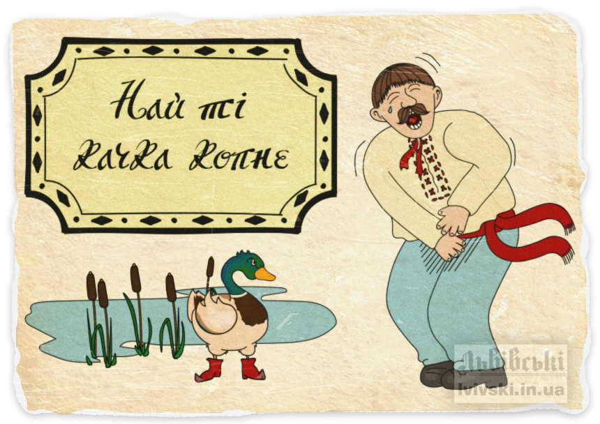
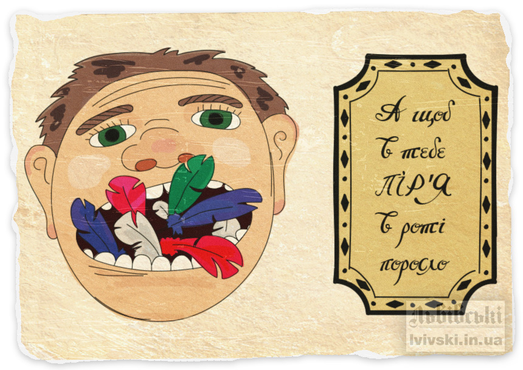
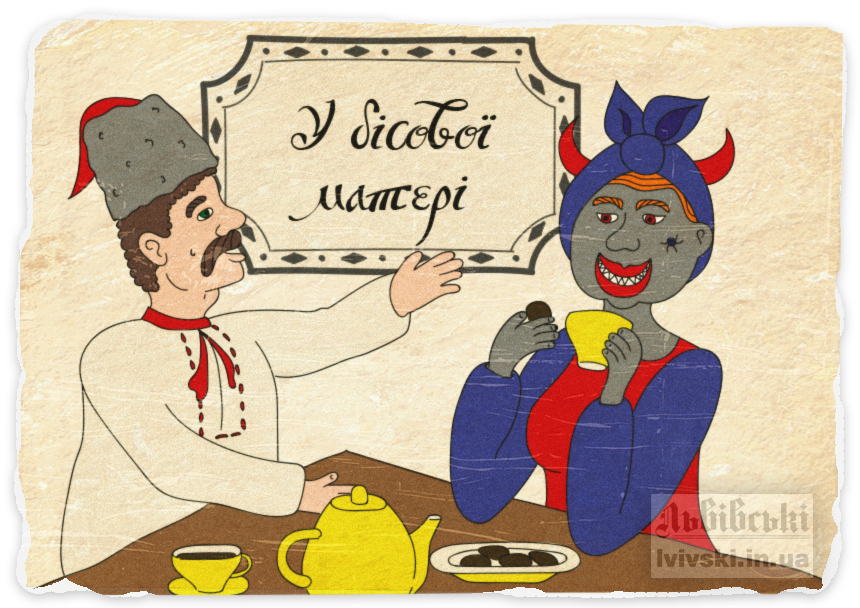

Як козаки…
Дехто стверджує, що українці ніколи не вживали жодної лайки, а найбільшою грубістю було назвати людину псом, свинею чи чортом.
На жаль, це не так. Експресивні вислови існують у будь-якій мові. І ми можемо довести вживання лайки українцями всього лише надавши текст загальновідомого листа запорозьких козаків до турецького султана Магомета Четвертого:
До речі у «Вікіпедії» є чотири версії цього листа, кожна з яких містить доволі грубі вислови. А на деяких форумах можна зустріти і версії, в яких ще більше лайки.
Хочеться сказати, що ми не пропагуємо лайку як таку, однак хочемо звернути увагу, що експресивні вислови існують у всіх без виключення мовах, і, якщо не вдається обійтись взагалі без них, то краще вживати рідну солов’їну, ніж запозичені російські чи американські мати. Тим паче що українською ви можете обізвати людину так, що ніскільки її не образите.
Як лаються українці?
Українська лайка починається, зазвичай, словами «а щоб тобі…» («хай йому», «най ті»), після яких має йти побажання. Бажають же українці чого завгодно – від «жити на одну зарплату» до «трясці».
Дуже розповсюдженими у наших краях є три вислови:«трясця його матері»,«шляк би його трафив», та «хай йому грець» .
Однак, ці вислови настільки міцно увійшли в мову саме у формі сталих виразів, що люди давно вже забули справжнє значення окремих слів. А слова ці зовсім не такі невинні, як би хотілось. До прикладу «трясця» означає хворобливий стан лихоманки, «шляк» – це «удар» або «інсульт», а «грець» означає дивні рухи, які трапляються у людей під час епілептичних нападів.
Якщо ви людина набожна, краще утримайтеся від вживання таких висловів і замінити їх на щось менш звичне, але більш позитивне.
Смішна і добра лайка
Оскільки українці, переважно, люди добрі, часто вони і лаються по-доброму, бажаючи об’єкту своєї лайки не зла, а навпаки, хороших чи, хоча би, смішних речей.
Представляємо вашій увазі добірку найпопулярнішої смішної української лайки, яка не тільки звучить досить автентично, а і піднімає настрій!
Най ті качка копне!
Мабуть, найпопулярніша лайка на Прикарпатті. На щастя, качки не те що «копати», а і ходити добре не вміють.
А щоб в тебе пір'я в роті поросло…
Зазвичай такий вислів вживають щодо осіб, які говорять щось зайве, озвучують песимістичні прогнози, розповідають чужі таємниці чи пліткують. Одним словом, це художнє прохання помовчати.
До бісової матері…
Біс – це доволі неприємне в українській міфології створіння. Однак у багатьох казках біса обманювали спритні козаки, тож його особливо ніхто у нас і не боїться. А бісової матері тим паче.
По-злому і по-смішному
Хоча ми не радимо вам вживати таких висловів, однак ви можете, принаймні, посміятись винахідливості українського народу: той придумав досить багато смішних експресивних висловів, переважно навіть без використання «матів»:
- А щоб твоя дружина з кумом повелася та дупа по шву розійшлася;
- Дурний тебе піп хрестив (про дурну людину);
- А щоб тебе муха вбрикнула;
- Тиць моя радість (означає подив. Пізніше перетворилось на «тиць-пердиць по-рускі здрасті»);
- То мені потрібне, як до дупи дверці;
- акий до діла, як свиня штани наділа;
- Дурний, як сало без хліба;
- Най тебе двері притиснуть;
- Най би ті всі зуби випали крім одного, який би тебе болів усе життя.